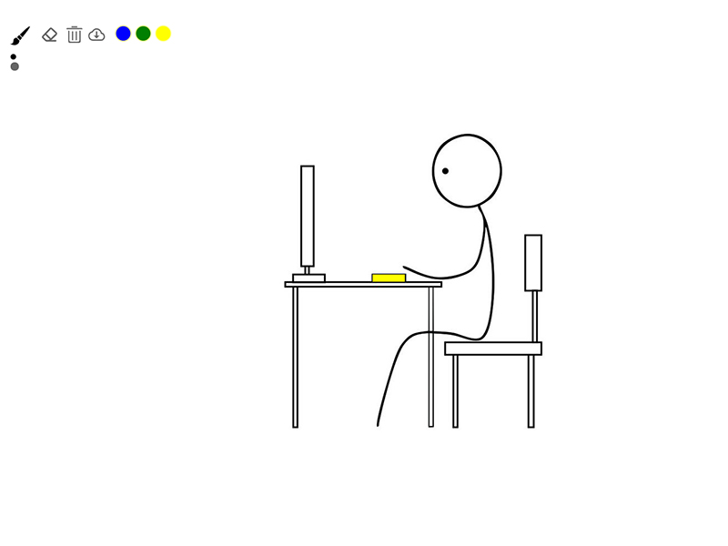

Portfolio
-
Template-storm UI
- 该项目是参照 Framework7、Ant Design、Element UI、iView 等 UI 库思路，做的一个基于 Vue 的简易 UI 组件库，目前已支持按钮、输入框、 网格、布局等组件。每个组件均经历从需求分析到 Mocha 单元测试，并用 TravisCI 实现持续集成，最终以 VuePress 为基础制作官方文档，发布于 npmjs.org。完成该项目使我对 Vue 的常用特征更加熟悉，同时提升了自己对前端工程化流程以及单元测 试重要性的深刻理解，近一步开源文化。
- 技术栈：Vue.js/ VuePress/ ES6/ Parcel/ Npm Scripts/ Mocha/ SCSS/ TravisCI
- Try it Github
仿QQ音乐移动端项目
我的翻译小工具
动态绘制皮卡丘
简易在线画板
